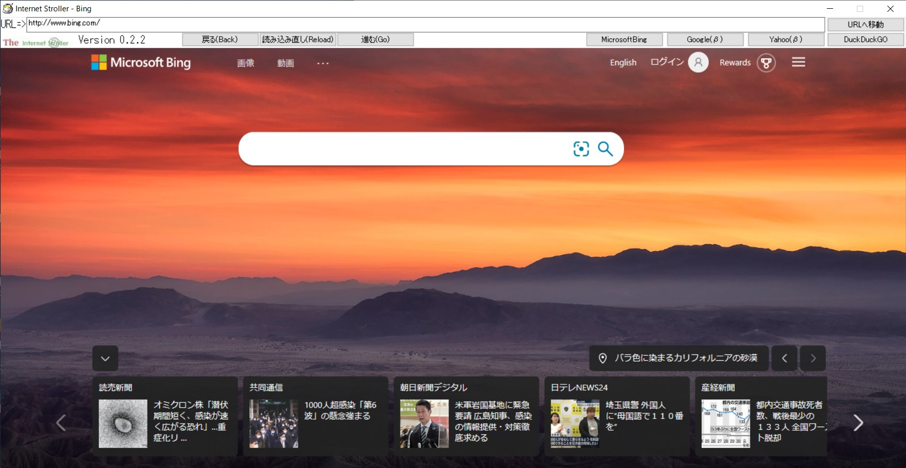
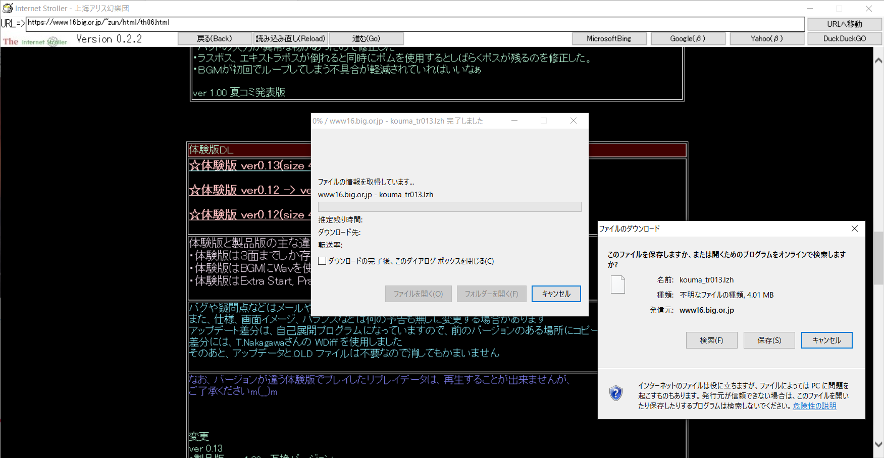

*********************************************
この作品の著作権はすべてABATBelieverに属します
*********************************************
Internet Stroller
昔を感じてみませんか?
Internet Strollerは、IEベースのブラウザです
ダウンロードやダイアル、フォントが懐かしいですよね?
ね???????????????
ダウンロードはこちら↓
https://github.com/ABATbeliever/Internet_Stroller/tree/main なるべく最新版を使ってください()
Made With Github!